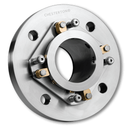
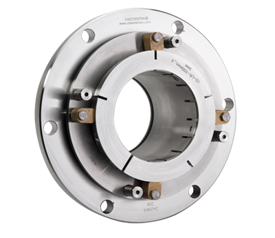

Chesterton tiene una amplia experiencia en ofrecer soluciones de sellado mecánico para una gran variedad de
aplicaciones difíciles en bombas para lodos. Nuestros innovadores sellos para bombas de lodos ofrecen:
Un diseño único antiobstrucción para un máximo movimiento del eje sin atascos, así como un servicio sin
necesidad de enjuague para una amplia gama de lodos.
Tecnología avanzada de funcionamiento en frío.
Caras monolíticas para una mayor fiabilidad del equipo.
Los especialistas de campo y los ingenieros de aplicaciones de Chesterton brindan un alto nivel de servicio y
experiencia en resolución de problemas para satisfacer las necesidades específicas de su operación en el
sellado de bombas para lodos.
Sellos para lodo Chesterton:

Chesterton 170 Sello de Cartucho Único para Lodos
Diseñado para Prolongar la Vida Útil de las Bombas para Lodos
Diseñado para sellado de lodos pesados con alto contenido de sólidos.
Diseño antiobstrucción que mejora la fiabilidad del sello.
Innovador sistema de placa de presión que mantiene los resortes completamente fuera del sello.
Reparación en campo disponible.

Chesterton 170 Diseñado para Ajustarse a las Bombas de la Serie Warman® AH®
Diseñado para sellado de lodos pesados con alto contenido de sólidos.
Diseño antiobstrucción que mejora la fiabilidad del sello.
Innovador sistema de placa de presión que mantiene los resortes completamente fuera del sello.